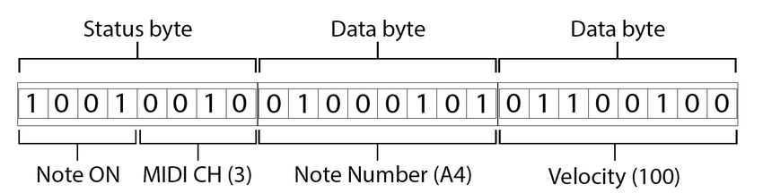
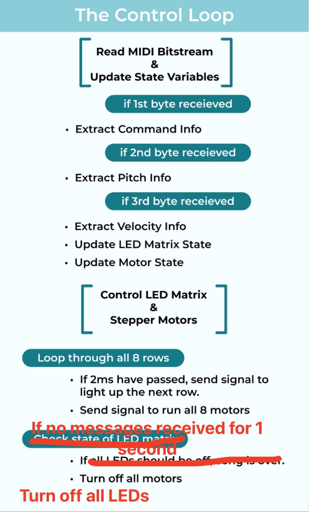
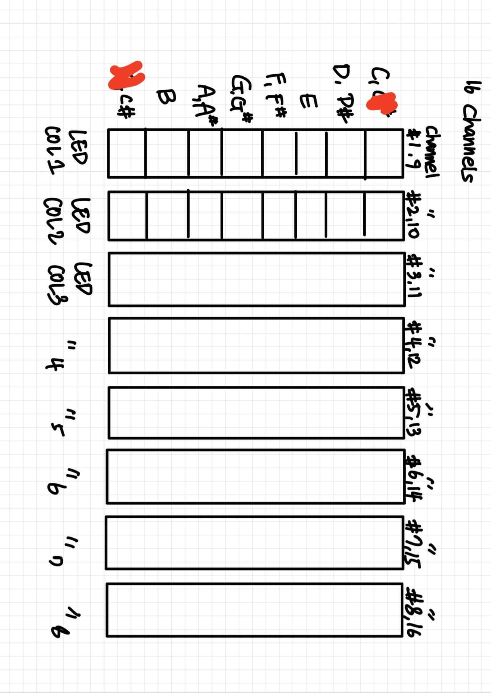

Disco Cats
Software
Our code base is written in C++ (code running on Arduino Uno and Mega) and Python3 (code running on laptop). Our final codebase consists of three scripts.
All scripts and setup instructions are available in our GitHub Repo.
Code was written iteratively, and checkpoints were saved at each sprint review and milestone.
- Arduino Uno runs User_Input_Manager.ino
- Laptop with Linux OS runs Linux_Music_Generator.py
- Arduino Mega runs MIDI_Decoder_and_LED_and_Motor_Controller.ino
User Input Manager
 An Arduino Uno manages a input panel with 9 push buttons with 9 corresponding status LEDs. Of the buttons, 8 are mapped to song excerpt select actions, and 1 is mapped to a song generate action. Pressing a song excerpt select button allows the user to select and experience a short 2 second song excerpt. The user can also click a button to generate a new 60 second song based on the selected excerpts. The chosen action is conveyed to the laptop via serial. A user can choose between two types of actions:
An Arduino Uno manages a input panel with 9 push buttons with 9 corresponding status LEDs. Of the buttons, 8 are mapped to song excerpt select actions, and 1 is mapped to a song generate action. Pressing a song excerpt select button allows the user to select and experience a short 2 second song excerpt. The user can also click a button to generate a new 60 second song based on the selected excerpts. The chosen action is conveyed to the laptop via serial. A user can choose between two types of actions:
Action 0, Music Selection
The user can click a button to select the corresponding 2 second song excerpt. When the song excerpt is selected, that song excerpt’s status LED turns on and a “selection command” with the song excerpt ID is sent over serial to the Laptop, triggering the full audio and visual display sequence. If the user clicks the button again, the song excerpt is unselected and the status LED turns off.
For each song excerpt option, the selection state is stored in a variable. If the debouncing period has passed and the button state has changed to HIGH, the selection state is toggled. If the selection state is HIGH, a selection command of the form “0 x\n” is sent over serial_1, where ‘x’ is the unique ID of the song except.
Action 1, Music Generation
If two or more song excerpts are selected and the user clicks the music generation button, a “generation command” with all the selected song excerpt IDs is sent over serial to the Laptop. This triggers machine-learning generation of a new 60 second song that is a combination of all the selected song excerpts, and also triggers the full audio and visual display sequence for the generated song.
If the debouncing period has passed and the button state has changed to HIGH, a request message of the form “1 x1 x2 x3\n” is created, where the ‘x’ values are the unique IDs of the currently selected song excerpts. If the request message has two or more selected song excerpts, the request message is sent over serial_1.
Play and Transmit MIDI Bitstream
 The program running on the laptop uses pySerial to listen for a “selection command” or “generation command” over serial_1. If a “selection command” is received, the program selects the corresponding MIDI file and sends it over serial. If the “generation command” is received, the program first uses machine learning to generate a new song, saves it to MIDI file format, and then sends the MIDI file over serial.
The program running on the laptop uses pySerial to listen for a “selection command” or “generation command” over serial_1. If a “selection command” is received, the program selects the corresponding MIDI file and sends it over serial. If the “generation command” is received, the program first uses machine learning to generate a new song, saves it to MIDI file format, and then sends the MIDI file over serial.
In order to send the MIDI file from the laptop over serial_2 in real time, we use two programs:
- TiMidity++: the default assumption is that real-time MIDI bitstreams are sent from an MIDI-supported instrument, rather than a file. In order to get a real-time bitstream from a MIDI file, we need to run the MIDI file through software synthesizer.
- ttyMIDI: creates a serial connection that can send a real-time MIDI bitstream between an external device (Arduino) and a device that has the Advanced Linux Sound Architecture (ALSA).
ML-Powered Music Generation
 The ML-Powered music generation uses Google Magenta's open-source Multitrack MusicVAE model to generate a piece of music that smoothly transitions from one song excerpt to another song excerpt. We chose to use this model because it imposes a strict limitation: the music it generates never has more than 8 instruments playing at a time. This limitation was worked into our design, informing our choice of an 8-column LED matrix and 8-dancing cats that both respond to the activation of 8 instruments.
The ML-Powered music generation uses Google Magenta's open-source Multitrack MusicVAE model to generate a piece of music that smoothly transitions from one song excerpt to another song excerpt. We chose to use this model because it imposes a strict limitation: the music it generates never has more than 8 instruments playing at a time. This limitation was worked into our design, informing our choice of an 8-column LED matrix and 8-dancing cats that both respond to the activation of 8 instruments.
The model is a variational autoencoder that has learned a 512-dimensional feature space where each point in the space can be decoded to ~2 second multi-track song excerpts. To generate a new song, the program encodes the two or more seed files to get their 512-dimensional coordinates and performs a spherical interpolation between them to get 20 points in between. Then it decodes all the new points back to their multi-track song format, and voila we have a smooth transitioning piece of generated music that can be saved to the MIDI file format!
The code for music generation and saving generated music to MIDI file format was referenced from Google Magenta’s MultitrackVAE Collab Notebook
LED Matrix and Motor Control
 The program running on Arduino Mega listens for a MIDI file bitstream over serial_2. The subsequent LED matrix and motor control behavior depends on the command, channel, note, and pitch behavior within each received MIDI message. The MIDI compression algorithm tends to place the instruments playing continuously on the same channel, so the channel number can be used as a proxy for an instrument identifier.
The program running on Arduino Mega listens for a MIDI file bitstream over serial_2. The subsequent LED matrix and motor control behavior depends on the command, channel, note, and pitch behavior within each received MIDI message. The MIDI compression algorithm tends to place the instruments playing continuously on the same channel, so the channel number can be used as a proxy for an instrument identifier.
A MIDI message is three bytes in the following format:
Byte-by-byte decoding of the MIDI bitstream can be done with a simple state machine. When a valid three byte message is decoded into pitch and channel information, we run logic to update state variables for the LED matrix and stepper motors.
Simultaneously, every time the control loop runs, we send signals to the LED matrix and motor controller hardware. Since the MIDI file does not have an end of transition message, we turn off all the motors and LEDs if no new MIDI messages are received for 1 second.
Arduino Mega control loop:
There are 16 channels in MIDI bitstream, each representing different instruments. Since we have 8 columns in the LED Matrix and 8 sets of cat movements mirroring each column, we used the modulus operator to group the channels into 8 pairs, each containing 2 channels (Channel 1 and 9, 2 and 10, 3 and 11, … , 8 and 16). For example, if either channel 1 or 9 is playing, the first column of the LED will be activated and the first motor will be running. If the C and E note are played in channel 3, the third cat movement is on, and the LED representing notes C and E is on for column 3.
Control Dancing Cat Motors Based on MIDI Channel Activity
The nine stepper motors are connected to 8 sets of cat movements. There are 9 motors, not 8, because one of the cat movements is four-bar linkage, which requires 2 motors to run simultaneously but in the opposite direction. The motors represent the harmonic offsets of the music being streamed. As the MIDI bitstream is played over serial, the arduino extracts information from each message. The MIDI song format groups 8 instruments into 16 channels. When either channel in a pair has active notes in it, the corresponding motor is set to a speed of 600 steps per second.
From the plethora of arduino libraries for driving stepper motors, we selected the AccelStepper library because it allows us to control motors with array pointers, which makes the motor status iteration code very clean.
We had to decide between using the two modes of stepper motors: full-step and half-step. Half-step mode is used when we need precise location of the motor, but it is twice as slower than the full-step. We decided to use full-step because we did not need the motor to be in a precise location. Thus, we set the interface type of the stepper motor to 4. (See AccelStepper Documentation Link for more information about stepper motor interface type)
To avoid jerky motion, we decided to keep the motors playing for a short period between notes. A counter is used to wait for a small period of time before turning off the motor.
Control LED Matrix Based on MIDI Notes
The rows of the LED matrix represent the pitches of notes that are played.
The diagram below shows the mapping between notes and the LED matrix.
The LED Matrix consists of 8 rows and 8 columns. Each of the 8 rows correspond to a pitch (C, D-D#, E, F-F#, G-G#, A-A#, B, C#). Each of the 8 rows correspond to an MIDI channel. The state of the whole array is saved in a 8x8 boolean matrix. When a “Note ON” message is received, the matrix cell corresponding to the message’s channel and pitch is changed to 1. When a “Note OFF” message or a command with Velocity == 0 is received, the corresponding matrix cell is changed to 0.
Since the motor control uses most of the Arduino Mega’s ports, a MAX7219 chip was used to individually control all 64 LEDs using just 3 ports: clock, load, and data signal. The MAX7219 chip works by turning on cells in a single row and holding the pattern for two milliseconds before changing to the next row. Due to persistence of vision, it looks like all the rows are lit simultaneously!
We wrote our own SPI transfer function to interface with the MAX7219 chip. This function controls the Arduino output signals to the CLK, LOAD, and DATA pins. We chose to write our own function because libraries to control the MAX7219 chip were extremely bloated in order to support all possible modes and configurations of the chip. Writing our own function resulted in cleaner code and easier debugging.
Integrating LED Matrix and Motor Code
While integrating the LED matrix control code with the motor control code, we ran into an issue: when only the motors were being controlled, the motors ran quickly and smoothly. However, when the LED matrix was also being controlled, the motors kept wiggling and stalling. At first, we assumed this was due to a power issue, as both motors and rows of LEDs use a significant amount of power. Yet, when we ran the math and re-checked out circuits, we saw that the AC-DC 12V and Arduino Mega 5V should have enough power to run both components.
Then we turned our eyes to our code. We realized that the culprit was a 2 millisecond delay() in the Matrix display code. While the delay allowed us to briefly persist the visual state of each column, it also blocked the control loop. This prevented the stepper motors from running for a few milliseconds, resulting in jittery and slow motor motion.
Since delay was necessary for our LED matrix control code, we had to figure out a non-blocking way to stall the LED matrix while running the active motors consistently.
The solution was using the millis() function track the last time the LED matrix column was displayed, and to not activate the next LED column until the difference between the last time and current time was greater than 2ms. This solution is non-blocking, so in the meantime, the motors can still run without pauses. By using millis() instead of delay() our LED matrix control code and our motor control code code efficiently share the timing of the control loop.